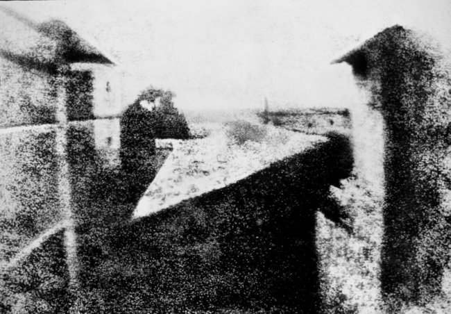

What is Photography ?
Photography is the art of capturing light with a camera, usually via a digital sensor or film, to create an image. With the right camera equipment, you can even photograph wavelengths of light invisible to the human eye, including UV, infrared, and radio.
The first permanent photograph was captured in 1826 (some sources say 1827) by Joseph Nicéphore Niépce in France. It shows the roof of a building lit by the sun. You can see it reproduced below:
Joseph Nicéphore Niépce
- Invention: The first permanent photograph (“View from the Window at Le Gras,” shown above)
- Where: France, 1826
- Impact: Cameras had already existed for centuries before this, but they had one major flaw: You couldn’t record a photo with them! They simply projected light onto a separate surface – one which artists used to create realistic paintings, but not strictly photographs. Niépce solved this problem by coating a pewter plate with, essentially, asphalt, which grew harder when exposed to light. By washing the plate with lavender oil, he was able to fix the hardened substance permanently to the plate.
- Quote: “The discovery I have made, and which I call Heliography, consists in reproducing spontaneously, by the action of light, with gradations of tints from black to white, the images received in the camera obscura.” Mic drop.